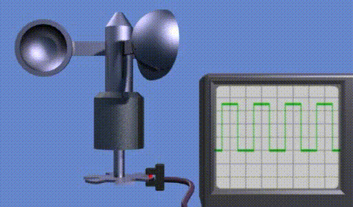

Questo tipo di anemometro è il più tradizionale. Contiene un codificatore angolare che genera un certo numero di impulsi per rivoluzione. La frequenza di questi impulsi dipende dalla velocità di rotazione delle tazze, che a sua volta dipende dalla velocità del vento. Questo dispositivo è omnidirezionale, il che significa che non dipende dall'orientamento della nacelle in relazione al vento.

Fig. 1.
Il rapporto tra velocità del vento e frequenza di uscita è abbastanza lineare, ma non interamente. Vedi la figura seguente.

Fig. 2.